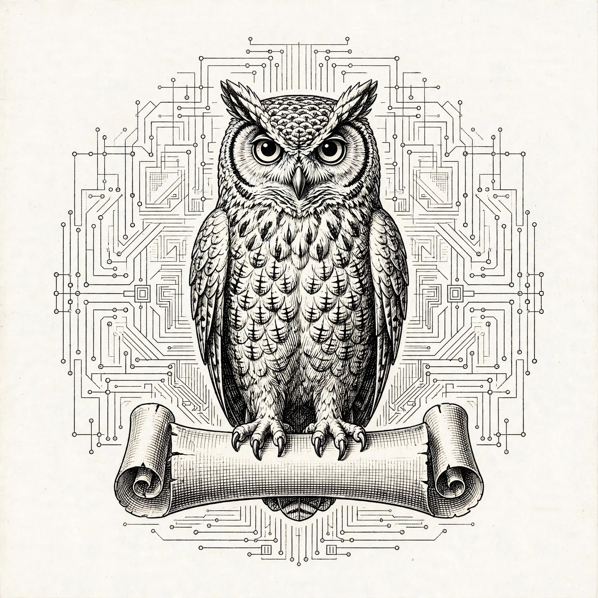
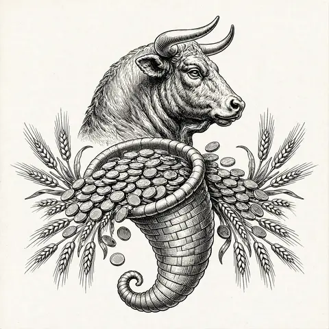
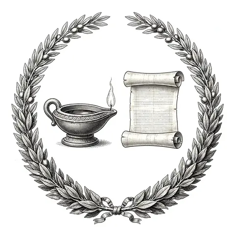
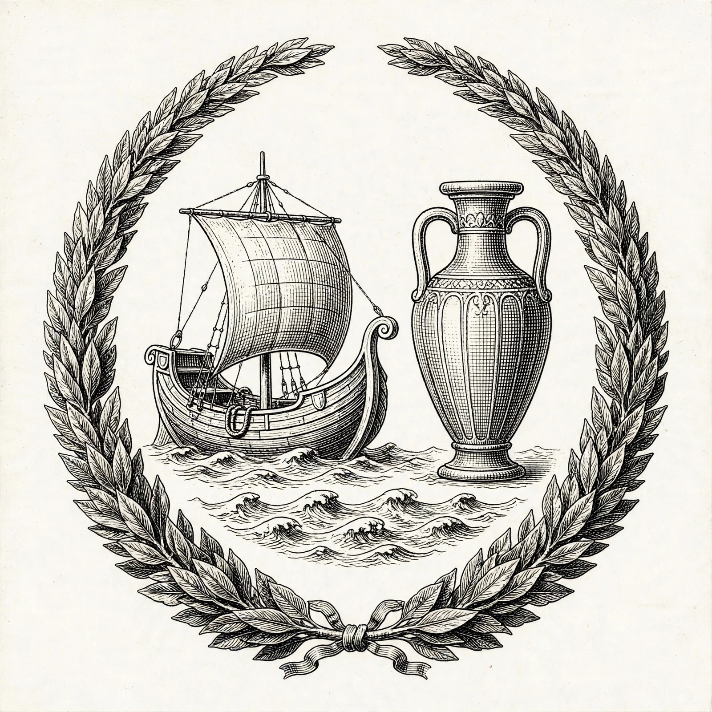
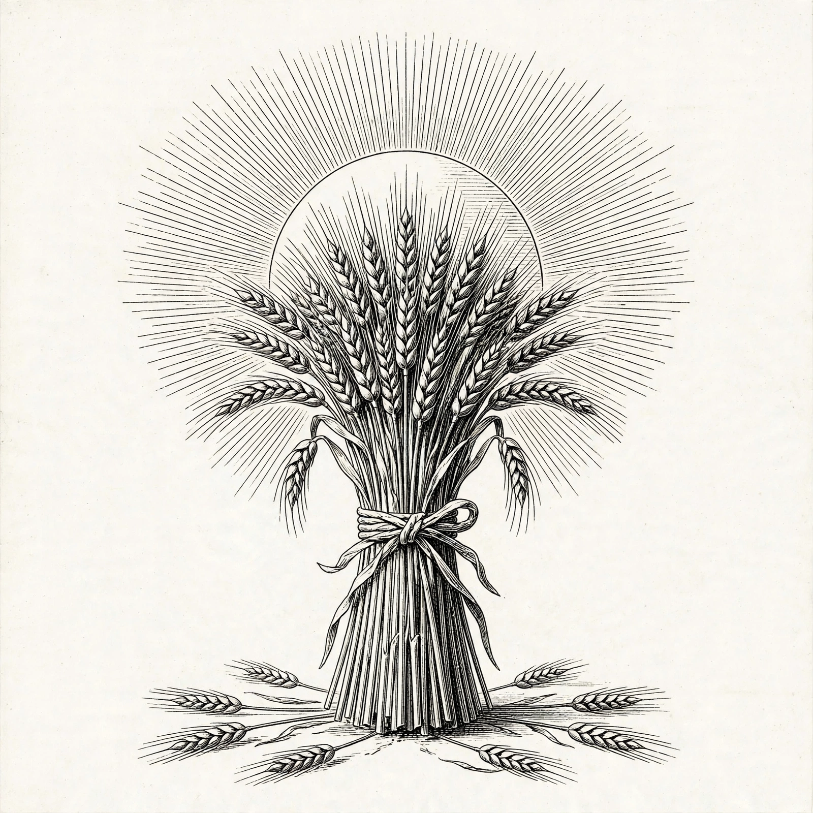
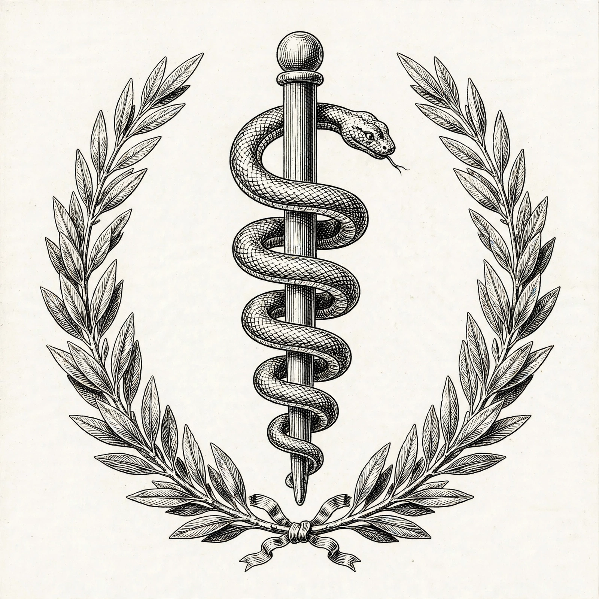

AI Agents
ICS Coach MCP
I turned iCanStudy's course library into a grounded AI coach that lives inside Claude and ChatGPT — it answers only from the corpus, with every claim cited to the exact lesson.
Live →MiroShark — Swarm Intelligence Engine
Upload any document and hundreds of AI personas simulate public reaction, hour by hour. Backend, frontend, and Docker — my flagship demo asset.
Code →Worn
My private wardrobe app — the closet lives in an MCP connector, so your AI assistant can talk to your clothes. Expo, Node, Supabase.
Live →
Trading & Simulation
Kaizen Trader Console
A bring-your-own-key console for my MiroShark and MiroFish trading engines — scenarios, calibration, comparison, and reports in one place. One OpenRouter key drives every model slot; keys never leave the browser.
Live →MiroShark Trader & MiroFish Trader
The two swarm-trading engines behind the console — the same simulation machinery, pointed at markets instead of public opinion.

Learning
Rewire
A 6-week interactive course on the science of learning that I built for my siblings, grounded in the full iCanStudy corpus — Justin Sung's voice in the copy, hands-on widgets throughout.
Live →Kolb's Cycle Tracker
A tracker for Kolb's experiential learning cycle — the practice loop behind the Rewire course.
Code →
Commerce
Peptides — CLI Rebrand
Rebuilt the peptides brand site as a Closed Loop Intelligence property: operations that run themselves — sense, act, learn.
Live →Peptiful Engine
The multi-tenant commerce infrastructure I founded: one warehouse, many storefronts, one stock — five white-label health brands on a single engine.

Agriful
Agriful — Systems That Run a Business
The Peptiful operating model rebuilt for agriculture: dealer orders, stock across mills, and collections in one place — including Eggflow, my system for layer farms that replaces WhatsApp screenshots and handwritten registers.
Story →Visual Map →
Health
Healthpedia
A family health record humans can read and AI agents can safely write to. It started as a hand-maintained PDF for my 76-year-old grandmother in Lahore — three doctors, conflicting plans, one page of truth.
Live →